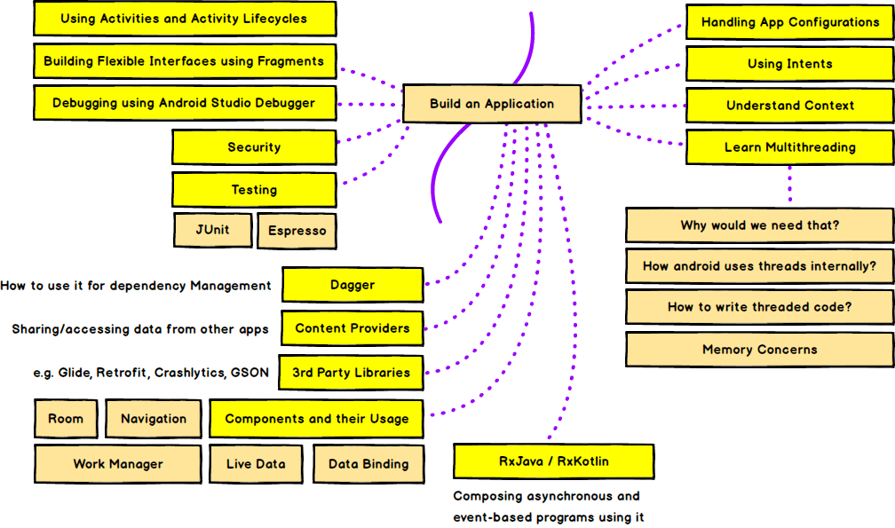

APP DEV ROADMAP
APP DEV ROADMAP
APP DEV ROADMAP
APP DEV ROADMAP


For the languages, you can develop android apps either by using Kotlin or Java.
Kotlin is the preferred choice these days for native android apps
Although, you can use both Kotlin and Java to develop native android apps, Google announced in 2019 to make Kotlin the preferred way of developing android applications. If you were to start learning android development today, Kotlin should be your language of choice.
Install the Android Studio and learn the basics of Kotlin to get started.
Version control systems record your changes to the codebase and allow you to recall specific versions later. There are multiple Version Control Systems available but Git is the most common one these days.
Here are some of the resources to get you started. Feel free to google and find something else that you find easier:
Here is the list of items that you are going to need when developing Android applications. Please note that, this is an exhaustive list, and you don't need to know it all from the get-go. Get an idea of the items listed, and just start building some apps and keep the items listed in the back of your mind and have a deep dive when using them.
Recommended Free Course from Google on Android Development with Kotlin
More Resources:
website by shreeya chatterji